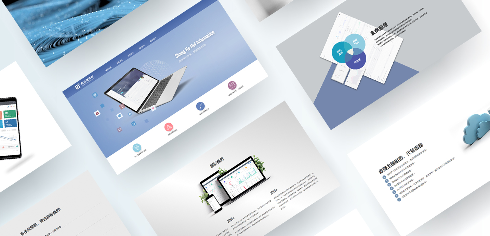
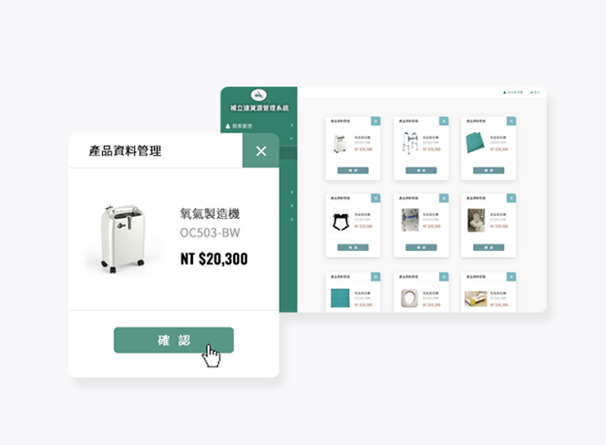
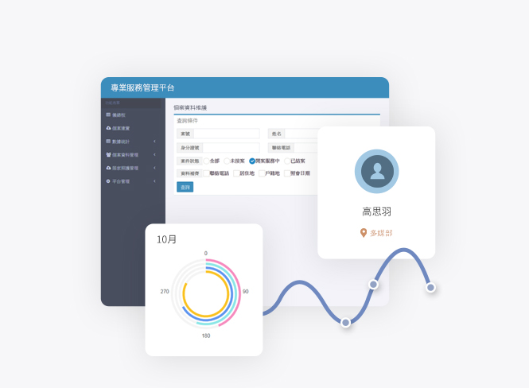
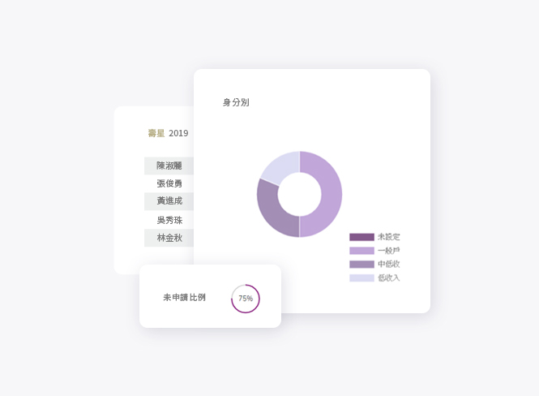
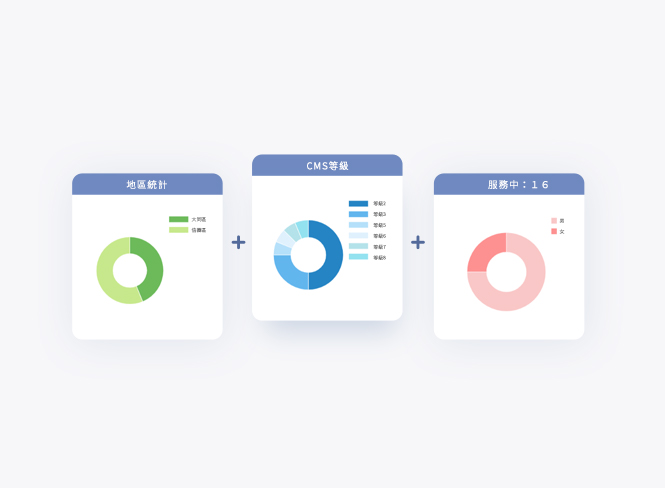

2019 Website.
視覺設計
CSS
HTML 5
商合滙為專注於高齡產業發展的科技公司，與許多長照相關機構合作過。
由於產業類別關係，較少圖片與案例照片可參考發想，只能依賴從文案內容去想像，
因此客戶與老闆給了很多空間，讓我思考如何呈現使用系統介面的方式。

這是第一次設計完後再自己切完整個網站，一邊兼顧實用性與設計，一邊跟時間賽跑十分掙扎， 在兩者之間做了不少取捨，雖然已盡力完成，但仍有許多細節能再處理得更好。



